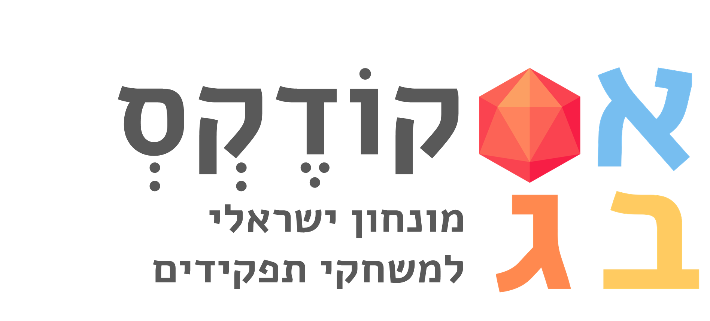

קודקס מונחי משחקי תפקידים
קודקס מונחי משחקי תפקידים הוא פרויקט קהילתי שמטרתו ליצור מילון מקיף ומדויק למונחים המרכזיים בעולם משחקי התפקידים השולחניים. הקודקס מתמקד בתרגום, יצירת מונחים עבריים תקניים וניסוח הגדרות קצרות וברורות שישמשו את קהילת השחקנים והמנחים בישראל.
המילון מכסה מונחים מכניקה, דמויות, עלילה וציוד, ומספק לכל מונח פירוש מפורט, מקור באנגלית ודוגמאות שימוש נפוצות. הקודקס הוא משאב חי ודינמי, ונתונים חדשים יתווספו אליו מעת לעת.
נכון לעכשיו, הקודקס כולל ... מונחים.
חיפוש מהיר
הקלד מילה בעברית או באנגלית כדי לחפש בקודקס.